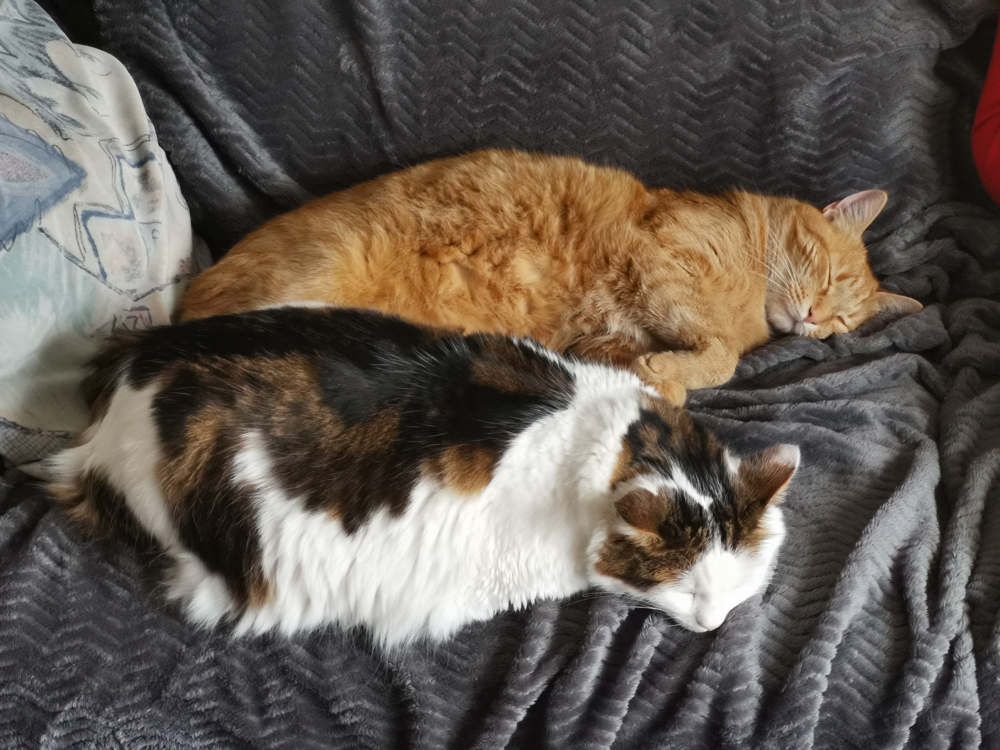

Passage to life

A cat is nice except when it bites.
Adorable hairball
Wild in its origins
The cat is the master of the house
Since the dawn of time...
In his heart lives a tiger
In his veins runs the blood of the lion
Her eyes reflect the stars and the mysteries
And his vibes extend his spirit
To Mother Nature
Who made him king, prince
Who made him noble in the eyes of the world
In the eyes of the ancient peoples.
He was a king, he was a God; Bastet
Goddess of the home in Egypt
Same as Hestia, goddess of the Greek cities
One leg behind the other, he moves forward
Through the ages, through time
His eyes still reflect
A piece of eternity
Cat Story
The domestic cat (Felis silvestris catus) is the subspecies resulting from the domestication of the wild cat, a carnivorous mammal of the family Felidae.
It is one of the main pets and today has about 50 breeds. recognized by the certification authorities. In many countries, the cat enters within the framework of legislation on domestic carnivores such as dogs and ferrets. Essentially territorial, the cat is a predator of small prey such as rodents or birds. Cats have a variety of vocalizations including purring, mewing. or grunts, although they communicate primarily through facial positions and and pheromones.

According to the results of work carried out in 2006 and 2007, the domestic cat is a subspecies of the feral cat (Felis silvestris) from ancestors belonging to the feral cat subspecies from Africa (Felis silvestris lybica). The first domestication is thought to have taken place 8,000 to 10,000 years ago.000 years to the Neolithic in the Fertile Crescent, a period corresponding to the beginning of the cultivation of and to the storage of reserves that are susceptible to attack by rodents, cats and other animals. becoming then for Man a useful auxiliary suitable for domestication.
At first revered by the Egyptians, he was demonized in Europe in the Middle Ages and did not regain his letters of nobility until the eighteenth century. In Asia, the cat remains synonymous with luck, wealth or longevity. This feline has left its mark on popular and artistic culture, both through popular expressions and various representations in literature, painting and music.